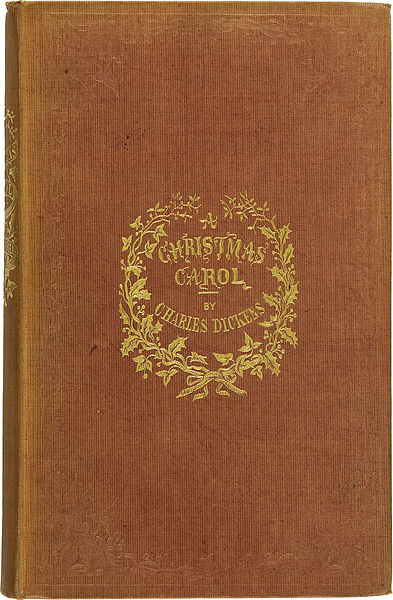

A Christmas Carol is intended for SATB choirs, children’s choirs, or ideally the two combined. There are also occasions where audience singing is encouraged. A number of small character solos can be sung from within the choir; the parts of Ebenezer and the Spirits are more substantial. The piece is suitable for performance by choirs, community groups and schools etc…
The libretto retains much of Dickens’ text and is by playwright and actor Deborah McAndrew, winner of “Best New Play” in the 2014 UK Theatre Awards.
Vocal scores with piano accompaniment (both SATB & 2-part) are available to hire; orchestral parts and parts for small band are available on request. Duration: 50-55 minutes.
The work was performed twice through Christmas 2014; the orchestral premier at Stockport Town Hall and a collaborative performance with adult and youth choirs at Lichfield Cathedral - receiving a standing ovation.
Any choirs / groups / orchestras / schools etc... that might be interested in performing the piece can contact me via: info@achristmascarol.org.uk